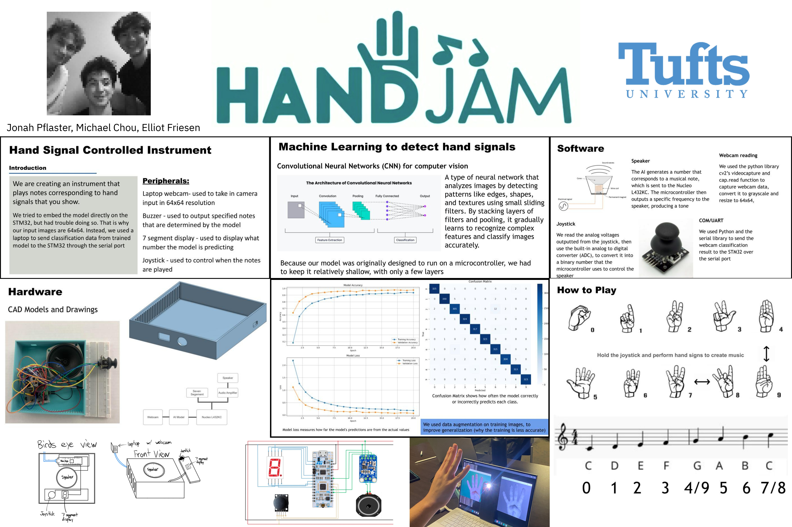

HandJam
An ASL Controlled Musical Instrument
Project Summary
HandJam is an "instrument" played using American Sign Language numbers (0-9) to play corresponding musical notes. A custom CNN model classifies hand gestures from a live camera feed, and the STM32 microcontroller converts predictions into audio via PWM. We scaled everything to fit on the NUCLEO-L432KC, including downsizing images to 64x64 pixels for real-time inference (when inference was originally supposed to run on the STM32). The model was trained on ~2000 ASL images and achieves 90-100% accuracy under good lighting with a clear background.
System Architecture
ML Pipeline (Laptop)
- Camera captures hand gesture
- Image scaled to 64x64 for real-time processing
- Custom CNN classifies ASL number
- Prediction sent to STM32 over UART
Audio Synthesis (STM32)
- TIM2 generates high-frequency PWM
- Number mapped to musical frequency
- ADC reads joystick for sound control
- SysTick provides precise timing
My Contributions
- Trained the CNN classification model on ~2000 ASL images
- Implemented the UART communication pipeline streaming real-time inference to the STM32
- Low level peripheral configuration and register level programming with CMSIS
Hardware
| Component | Purpose |
|---|---|
| NUCLEO-L432KC | Main microcontroller (STM32L432KC) |
| PAM8302 Amplifier | Audio amplification |
| 8Ω Speaker | Audio output |
| 7-Segment Display | Shows detected number |
The Team

Project poster. Group members: Jonah Pflaster, Michael Chou, and Elliot Friesen. (The top left photo is actually the downsized 64x64 images used for classification!)
Future Work
We attempted to run both the camera interface and classification model directly on the STM32 but couldn't get it working in time for the final presentation. Running the full pipeline on-device without a laptop remains an interesting challenge for future iterations.